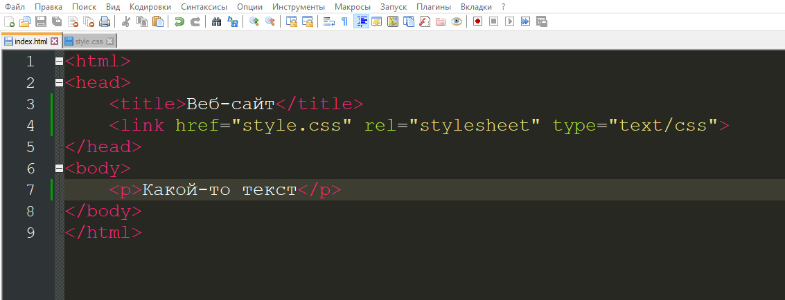
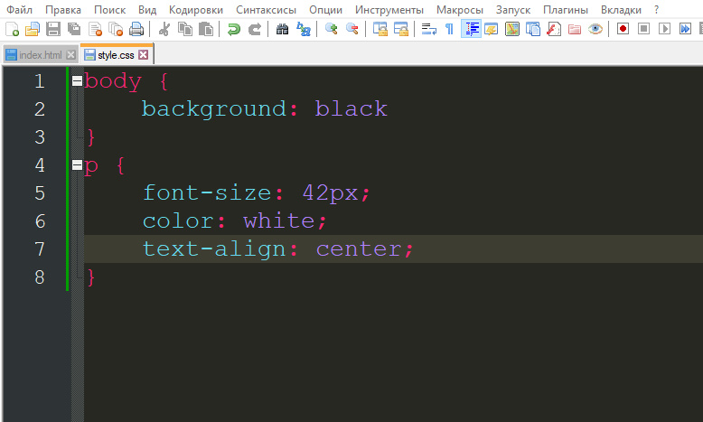
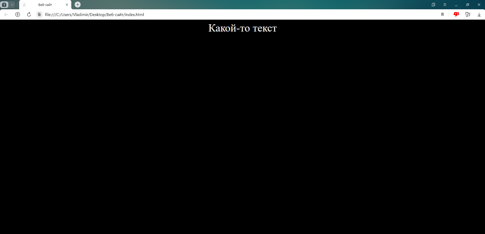
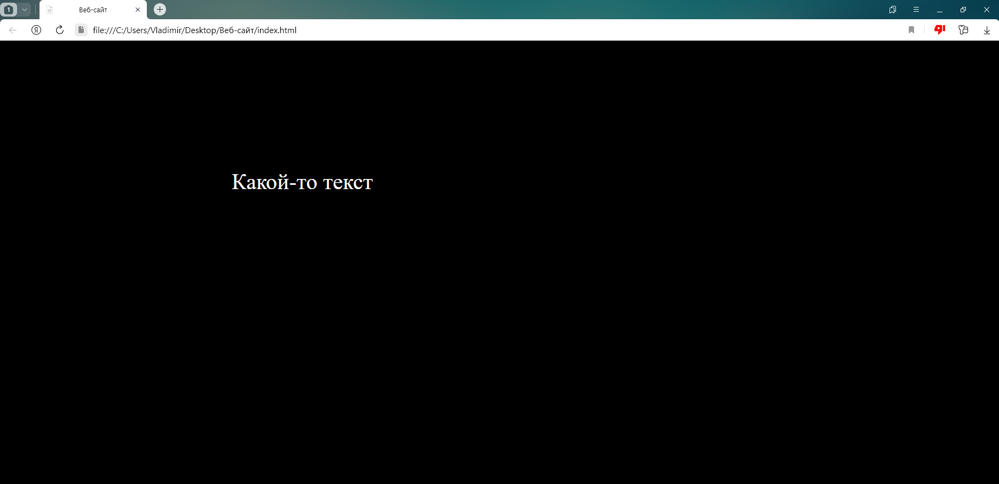

CSS - для начинающих

Первым делом нужно создать еще один файл в корневой папке сайта, создадим новый текстовый файл и переименуем его в style, также нам нужно изменить его расширение на .css и зараннее откроем его текстовом редакторе
Следующим этапом нужео подключить его к нашему index.html, для этого нужно открыть файл с которым мы ранее работали в любом текстовом редакторе и между двумя мета-тегами head вписать следующий код:
Тут указана ссылка на файл и тип этого самого файла, теперь напишем теле документа(между тегами body) небольшой текст и обернем его в параграф(p), с котором мы ранее работали. Перейдем к редактированию в style.css и попробуем изменить некоторые свойства нашего сайта
Сначала мы обратились к селектору body, который представляет всю визуальную часть сайта и изменили его свойство background(фон сайта) на черный. А селектор p(параграф), мы наоборот сделаем белым при помощи свойства color и прописанного значения white. Также при помощи свойства text-align и значения text-align центрируем текст по середине строки и посмотрим что у нас получилось
Если вы все корректно написали, то сайт должен теперь выглядить таким образом, как на картинке выше. Есть огромное количество самых разнообразных свойств у тех или иных частей сайта, все их конечно же не обязательно запоминать наизусть
Давайте возьмем все тот-же параграф и попробуем сделать так, чтобы он был немного по центру сайта и левее нынешней позиции, сделать это можно многими способами, но мы попробуем при помощи свойства margin, которое отвечает за отступы и его значения ЧИСЛОpx(сверху), ЧИСЛОpx(справа), ЧИСЛОpx(снизу), ЧИСЛОpx(слева). Допустим мы напишем: margin: 240px 740px 0 0;
